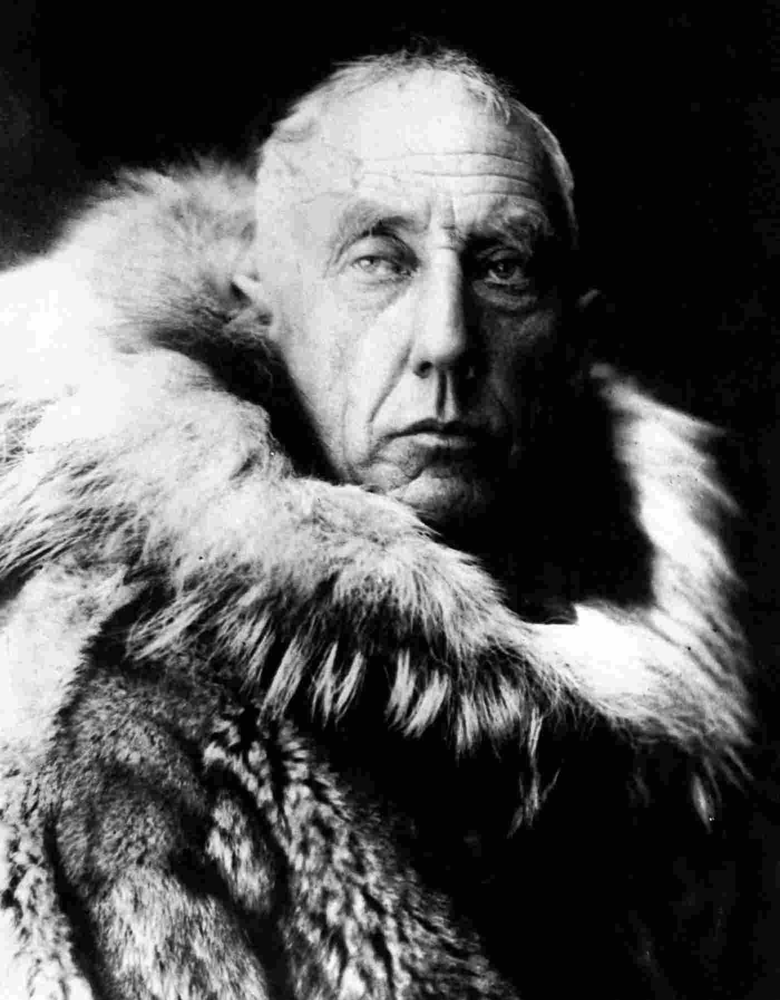

Roald Amundsen
Norwegian Explorer - First Man to Navigate the Northwest Passage and Cross the South Pole

The English have loudly and openly told the world that skis and dogs are unusable in these regions and that fur clothes are rubbish. We shall see — we shall see.- Roald Engelbregt Gravning Amundsen (16 July 1872 - c. 18 June 1928)
Timeline
July 16, 1872
Roald Engelbregt Gravning Amundsen is born in Borge, Østfold, Norway
August 16, 1897 - November 5, 1899
Amundsen joins Adrien de Gerlache's Antarctic expedition as mate. The crew departs Antwerp, Belgium aboard the RV Belgica and is trapped in the ice off Peter I Island for seven months. Two of the crew perish during the expedition.
June 16, 1903 - August 31, 1906
A new expedition is led by Amundsen to navigate the Northwest Passage. The Gjøa is sailed from Oslofjord, Norway to King William Island, Nunavut and on to Nome, Alaska. The ship is iced in for nearly two years south of King William Island and again for eight months near Hershel Island, Yukon. Amundsen leaves the expedition for three months while iced-in at Hershel Island and skis 800km to Eagle City, Alaska where there was a telegraph station. He returns to the iced-in Gjøa and sails to Nome and then San Francisco. The Gjøa was sold in San Francisco and displayed in Golden Gate Park.
April 21, 1908
US explorer Frederick Cook claims to reach the North Pole. No convincing proof was produced and the claim was not widely accepted.
November 10, 1908
Amundsen makes public plans to reach the North Pole in the vessel Fram by sailing north from Point Barrow and drifting in the sea ice for four or five years. The plans were inspired by an unsuccesful attempt by Fridjtof Nansen to cross the North Pole by drifting the Fram through the sea ice off the Siberian coast towards Greenland. Amundsen receives financial support from the King of Norway and the Norwegian parliament.
April 6, 1909
Robert Peary claims to reach the North Pole with Matthew Henson. They were widely credited with the accomplishment but the claim became, and remains, disputed and controversial.
September 1, 1909
Amundsen plans journey to the South Pole.
September 9, 1910
Before departing from Portugal, Amundsen advises crew they are sailing to Antarctica instead of around Cape Horn to Arctic. Amundsen sends a telegram to English rival explorer Robert F. Scott:
beg to inform you Fram proceeding Antarctic - Amundsen.When news of Amundsen's change of plans reach Norway, the government, press, and public reaction is almost completely unfavorable
January 14, 1911
The expedition reaches Bay of Whales, Ross Ice Shelf, Antarctica. The Fram is anchored in the bay and the crew spends the next eleven months establishing and supplying a line of depots toward the South Pole.
December 14, 1911
Amundsen and his team reach the South Pole. A flag, and letter kept in a small tent, were left to demonstrate the accomplishment. Robert Falcon Scott's team discovered these items on January 17, 1912. Scott's expedition began at Cape Evans, 200 miles west of Bay of Whales and 60 miles farther from the pole. The team led by Scott perished on the return trip from the pole on or about March 29, 1912.
c. June 18, 1928
Roald Engelbregt Gravning Amundsen disappears while flying with a rescue mission from Tromsø, Norway to search for survivors of an airship disaster.
To learn more, please visit the Roald Amundsen Britannica Entry.
Adventure is just bad planning.- Roald Amundsen